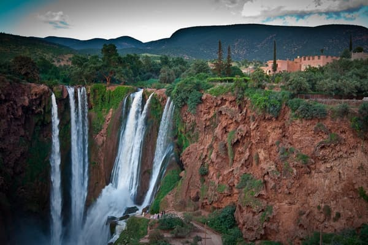
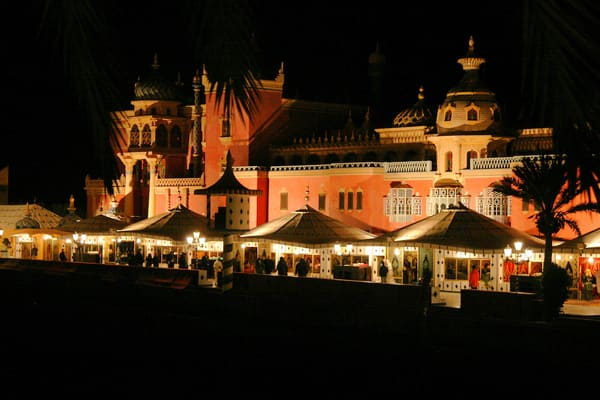
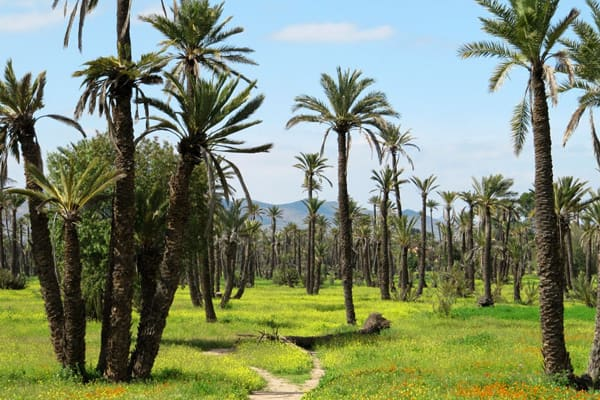
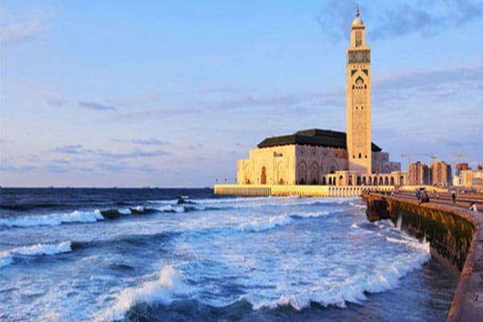

Decouvrir Marrakech
Visitez la médina de Marrakech, place Jamaa Lefna, et monuments historiques, une balade pour découvrir...
Voir le détailVisitez la médina de Marrakech, place Jamaa Lefna, et monuments historiques, une balade pour découvrir l’histoire riche de la ville ocre

Visitez la médina de Marrakech, place Jamaa Lefna, et monuments historiques, une balade pour découvrir...
Voir le détailUne aventure inoubliable pour découvrir les étendues du désert d'Agafay et admirez un coucher de soleil...
Voir le détail
Excursion d’une journée au départ de Marrakech pour découvrir l’ancienne médina d’Essaouira, son ancien...
Voir le détail
Un tour dans la vallée de l’Ourika et ses 7 cascades en une journée avec une randonné facile au pied de...
Voir le détail
En destination du sud de Marrakech un passage par le col de Tizi N'Tichka à 2260 m d'altitude vous...
Voir le détail
Un circuit de rêve au départ de Marrakech pour visite du village d’Asni, Tahanaout avant d’arriver à la...
Voir le détail
Nommées les plus hautes chutes de l’Afrique du nord (120 m), à 02 h 30 de route de Marrakech une journée...
Voir le détail
Un décor de mille et une nuit, un dîner typiquement marocain et un spectacle folklorique éblouissant à...
Voir le détail
Un circuit d’une journée pour découvrir les plus belles vallées du sud de Marrakech ; Ourika, val...
Voir le détail
Une balade d’une ½ journée pour visiter la palmeraie, les jardins de Majorelle, la Ménara, les jardins...
Voir le détail
Connu par sa station de ski et son sommet enneigé durant 6 mois par an; Oukaimeden offre á ses visiteurs...
Voir le détail
Une excursion à la capitale économique et la plus grande ville du Maroc; Casablanca et sa grande mosquée...
Voir le détailN’hésitez pas à nous consulter pour plus de promotions.
Visitez la médina de Marrakech, place Jamaa Lefna, et monuments historiques, une balade pour découvrir l’histoire riche de la ville ocre....
| Véhicule | Tarif |
|---|---|
| Minibus 4 places | 70 Euro |
| Minibus 7 places | 80 Euro |
| Minibus 14 places | 130 Euro |
| Minibus 17 places | 140 Euro |
| Autocar 29 places | 240 Euro |
| Autocar 48 places | 350 Euro |
Assurance des passagers et frais du chauffeur compris.
RéserverUne aventure inoubliable pour découvrir les étendues du désert d'Agafay et admirez un coucher de soleil magique...
| Véhicule | Tarif |
|---|---|
| Minibus 4 places | 85 Euro |
| Minibus 7 places | 95 Euro |
| Minibus 14 places | 135 Euro |
| Minibus 17 places | 145 Euro |
| Autocar 29 places | ND |
| Autocar 48 places | ND |
Assurance des passagers et frais du chauffeur compris. ND : véhicule non proposé sur cette formule.
RéserverExcursion d’une journée au départ de Marrakech pour découvrir l’ancienne médina d’Essaouira, son ancien port portugais et sa belle corniche....
| Véhicule | Tarif |
|---|---|
| Minibus 4 places | 120 Euro |
| Minibus 7 places | 140 Euro |
| Minibus 14 places | 175 Euro |
| Minibus 17 places | 195 Euro |
| Autocar 29 places | 400 Euro |
| Autocar 48 places | 580 Euro |
Assurance des passagers et frais du chauffeur compris.
RéserverUn tour dans la vallée de l’Ourika et ses 7 cascades en une journée avec une randonné facile au pied de l’Atlas et au bord de la rivière de Sitti-Fatma....
| Véhicule | Tarif |
|---|---|
| Minibus 4 places | 75 Euro |
| Minibus 7 places | 90 Euro |
| Minibus 14 places | 135 Euro |
| Minibus 17 places | 145 Euro |
| Autocar 29 places | ND |
| Autocar 48 places | ND |
Assurance des passagers et frais du chauffeur compris. ND : véhicule non proposé sur cette formule.
RéserverEn destination du sud de Marrakech un passage par le col de Tizi N'Tichka à 2260 m d'altitude vous permettra de joindre la fabuleuse Kasbah d'Ait Ben Haddou ....
| Véhicule | Tarif |
|---|---|
| Minibus 4 places | 140 Euro |
| Minibus 7 places | 160 Euro |
| Minibus 14 places | 185 Euro |
| Minibus 17 places | 195 Euro |
| Autocar 29 places | 420 Euro |
| Autocar 48 places | 650 Euro |
Assurance des passagers et frais du chauffeur compris.
RéserverUn circuit de rêve au départ de Marrakech pour visite du village d’Asni, Tahanaout avant d’arriver à la belle vallée d’Imlil située au pied du mont Toubkal....
| Véhicule | Tarif |
|---|---|
| Minibus 4 places | 80 Euro |
| Minibus 7 places | 95 Euro |
| Minibus 14 places | 140 Euro |
| Minibus 17 places | 155 Euro |
| Autocar 29 places | 275 Euro |
| Autocar 48 places | ND |
Assurance des passagers et frais du chauffeur compris. ND : véhicule non proposé sur cette formule.
RéserverNommées les plus hautes chutes de l’Afrique du nord (120 m), à 02 h 30 de route de Marrakech une journée au cascades d’Ouzoud sera une expérience inoubliable....
| Véhicule | Tarif |
|---|---|
| Minibus 4 places | 120 Euro |
| Minibus 7 places | 135 Euro |
| Minibus 14 places | 170 Euro |
| Minibus 17 places | 185 Euro |
| Autocar 29 places | 350 Euro |
| Autocar 48 places | 500 Euro |
Assurance des passagers et frais du chauffeur compris.
RéserverUn décor de mille et une nuit, un dîner typiquement marocain et un spectacle folklorique éblouissant à découvrir en une soirée à la Fantasia Chez Ali....
| Véhicule | Tarif |
|---|---|
| Minibus 4 places | 40 Euro |
| Minibus 7 places | 50 Euro |
| Minibus 14 places | 80 Euro |
| Minibus 17 places | 90 Euro |
| Autocar 29 places | 180 Euro |
| Autocar 48 places | 260 Euro |
Assurance des passagers et frais du chauffeur compris.
RéserverUn circuit d’une journée pour découvrir les plus belles vallées du sud de Marrakech ; Ourika, val d’Asni, plateau de Kik et le lac de Lalla Takerkoust....
| Véhicule | Tarif |
|---|---|
| Minibus 4 places | 120 Euro |
| Minibus 7 places | 135 Euro |
| Minibus 14 places | 170 Euro |
| Minibus 17 places | 185 Euro |
| Autocar 29 places | ND |
| Autocar 48 places | ND |
Assurance des passagers et frais du chauffeur compris. ND : véhicule non proposé sur cette formule.
RéserverUne balade d’une ½ journée pour visiter la palmeraie, les jardins de Majorelle, la Ménara, les jardins d’Agdal et remparts de la médina de Marrakech....
| Véhicule | Tarif |
|---|---|
| Minibus 4 places | 60 Euro |
| Minibus 7 places | 70 Euro |
| Minibus 14 places | 90 Euro |
| Minibus 17 places | 105 Euro |
| Autocar 29 places | 170 Euro |
| Autocar 48 places | 220 Euro |
Assurance des passagers et frais du chauffeur compris.
RéserverConnu par sa station de ski et son sommet enneigé durant 6 mois par an; Oukaimeden offre á ses visiteurs une journée pleine d'aventure á plus de 2600 m d'altitude.....
| Véhicule | Tarif |
|---|---|
| Minibus 4 places | 85 Euro |
| Minibus 7 places | 95 Euro |
| Minibus 14 places | 155 Euro |
| Minibus 17 places | 175 Euro |
| Autocar 29 places | 300 Euro |
| Autocar 48 places | ND |
Assurance des passagers et frais du chauffeur compris. ND : véhicule non proposé sur cette formule.
RéserverUne excursion à la capitale économique et la plus grande ville du Maroc; Casablanca et sa grande mosquée Hassan II bâtie au bord de l’océan Atlantique…...
| Véhicule | Tarif |
|---|---|
| Minibus 4 places | 150 Euro |
| Minibus 7 places | 160 Euro |
| Minibus 14 places | 195 Euro |
| Minibus 17 places | 215 Euro |
| Autocar 29 places | 510 Euro |
| Autocar 48 places | 750 Euro |
Assurance des passagers et frais du chauffeur compris.
RéserverThèmes des excursions au départ de Marrakech
Marrakech, l’une des plus belles destinations au monde, offre à ses visiteurs un grand choix de d’excursions et visites pour découvrir la beauté de la ville ocre, les paysages paradisiaques de sa région et la richesse de son histoire et ses coutumes, pour profiter pleinement de votre séjour à Marrakech Trans Marrakech propose un grand choix de destinations les plus recommandées par les professionnel du tourisme et les voyageurs.
Les thèmes des balades que nous proposons sur notre page « Excursions à Marrakech » sont élaborés pour satisfaire tous les goûts et pour toutes tranches d’âge :
Thème personnalisé sur mesure:
Grâce à notre longue expérience en l’organisation de voyage à Marrakech et dans sa région nous offrons à nos clients la possibilité de personnaliser l’excursion de leur choix et à leur goût et selon leur budget tout en définissant eux-mêmes les horaires de leur sortie et les lieux qu’ils souhaitent visiter, pour cela il suffit de nous contacter pour vous aidez à concrétiser votre projet d’excursion.
Fondée en 1062 par Youssef Ibn Tachfine, chef des Almoravides, Marrakech était à l'origine une forteresse militaire destinée à servir de base pour l'expansion de l'empire musulman en Afrique du Nord. Son emplacement stratégique, au carrefour des routes commerciales reliant l'Afrique subsaharienne, l'Europe et le Moyen-Orient, en a fait un centre commercial et culturel florissant.
Sous la dynastie des Almoravides, Marrakech est devenue la capitale de l'empire, marquée par la construction de monuments emblématiques tels que la mosquée de la Koutoubia, symbole de l'architecture hispano-mauresque, et la Kasbah, une imposante citadelle fortifiée. La ville a prospéré sous les dynasties successives des Almohades, des Mérinides et des Saadiens, qui ont toutes contribué à enrichir son patrimoine architectural et culturel.
Au fil des siècles, Marrakech a attiré des artistes, des marchands et des voyageurs du monde entier, créant une société cosmopolite et dynamique. La médina, avec ses ruelles étroites, ses souks animés et ses palais somptueux, est un témoignage vivant de ce riche passé historique.
L'arrivée des dynasties européennes, notamment les Portugais et les Espagnols, a marqué une nouvelle ère pour Marrakech, avec des périodes d'invasion, de conflit et d'influence étrangère. Cependant, la ville a toujours su préserver son identité culturelle unique, fusionnant les influences arabes, berbères, juives et africaines pour créer un melting-pot vibrant de traditions et de coutumes.
Aujourd'hui, Marrakech continue d'être l'une des destinations les plus prisées du Maroc, attirant des millions de visiteurs chaque année avec son mélange envoûtant de patrimoine historique, d'architecture magnifique, de saveurs exotiques et d'hospitalité chaleureuse. La ville est un témoignage vivant de son passé glorieux et un symbole de la richesse culturelle du Maroc.
Que faire à Marrakech et sa région:
Marrakech, surnommée la "Perle du Sud", est l'une des destinations les plus envoûtantes du Maroc, offrant aux visiteurs une immersion profonde dans la culture, l'histoire et la beauté naturelle du pays. Au cœur de la ville se trouve la célèbre place Jemaa el-Fna, un véritable spectacle vivant où les charmeurs de serpents, les conteurs, les musiciens et les vendeurs créent une ambiance magique à toute heure du jour et de la nuit. Les souks labyrinthiques de la médina regorgent de trésors artisanaux, de tapis colorés, d'épices enivrantes et de bijoux étincelants, offrant une expérience de shopping inoubliable.
En dehors de la médina, Marrakech regorge de sites historiques à explorer, tels que les somptueux Jardins de Majorelle, créés par le peintre français Jacques Majorelle, et le palais de la Bahia, un chef-d'œuvre de l'architecture marocaine avec ses magnifiques jardins et ses salles richement décorées.
Pour ceux en quête d'aventure, les excursions dans les environs de Marrakech offrent une multitude d'opportunités passionnantes. Parmi les excursions les plus populaires figurent :